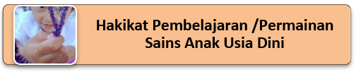

Hakikat Pembelajaran/Permainan Matematika, sains dan Teknologi untuk Anak Usia Dini
Bahasan pada Kegiatan Belajar 1 adalah mengenai Hakikat Pembelajaran/Permainan Matematika, sains dan Teknologi untuk Anak Usia Dini
Untuk mengetahui hakikat pembelajaran/permainan Matematika, silahkan simak video ini ya.
Setelah mengamati tayangan video tersebut, jadi menurut anda bagaimana hakikat pembelajaran/permainan Matematika?
Kata matematika berasal dari perkataan Latin mathematika yang mulanya diambil dari perkataan Yunani mathematike yang berarti mempelajari. Perkataan itu mempunyai asal katanya mathema yang berarti pengetahuan atau ilmu (Knowledge, science). Kata mathematike berhubungan pula dengan kata lainnya yang hampir sama, yaitu mathein atau mathenein yang artinya belajar (berpikir). Jadi, berdasarkan asal katanya, maka perkataan matematika berarti ilmu pengetahuan yang didapat dengan berpikir (Bernalar). Matematika lebih menekankan kegiatan dalam dunia rasio (Penalaran), bukan menekankan dari hasil eksperimen atau hasil observasi matematika terbentuk karena pikiran-pikiran manusia, yang berhubungan dengan idea, proses, dan penalaran (Russeffendi ET, 1980 :148). Matematika adalah ilmu tentang sesuatu yang memiliki pola keteraturan dan urutan yang logis. Menemukan dan mengungkapkan keteraturan atau urutan ini dan kemudian memberi arti merupakan makna dari mengerjakan matematika.
Menurut NCTM (National Council of Teachers of Mathematics) dalam Novikasari (2016: 12), standar untuk matematika sekolah meliputi lima bidang yaitu: bilangan dan operasi bilangan, aljabar, geometri, pengukuran, dan analisis data serta peluang. Dalam PAUD aljabar dapat berupa pengelompokan, pola dan hubungan, operasi dengan dapat digunakan untuk mengenal hubungan dan diperluas untuk membuat generalisasi.

Menurut Judith (2007), sains adalah sebuah studi yang berhubungan dengan fakta atau kebenaran yang disusun secara sistematis dan menunjukkan operasi hukum yang bersifat umum. Sedangkan menurut Rosaline dan Karen (2010) sains juga bisa diartikan sebagai cara untuk mencoba untuk menemukan hakikat segala sesuatu, sikap dan keterampilan yang memungkinkan individu untuk memecahkan masalah yang mereka hadapi dalam kehidupan sehari-hari. Sedangkan pemahaman tentang sains yang disampaikan oleh Brewer mengatakan bahwa sains adalah semua yang ada/nampak di sekitar kita, terjadi di mana kita berada. Pembelajaran sains pada anak-anak usia dini dapat diartikan sebagai hal-hal yang menstimulus mereka untuk meningkatkan rasa ingin tahu, minat dan pemecahan masalah, sehingga memunculkan pemikiran dan perbuatan seperti mengobservasi, berpikir, dan mengaitkan antar konsep atau peristiwa.
Bagi anak, sains adalah tentang mencoba mengerti tentang dunia yang dilihatnya yaitu manusia, hewan, tumbuhan, dan benda-benda lain di lingkungan dengan melakukan percobaan dan melaporkan penemuannya (Mayesky). Sains untuk anak berisi tentang bagaimana anak berinteraksi dengan dunia di sekitar mereka (Hilda L). Anak mempelajari sains dengan mengeksplorasi dunia yang ada di sekitar mereka (George S. Morrison).
Idealnya, sains bukan waktu yang dipisahkan dari pengalaman-pengalaman lain anak. Ini merupakan bagian dari pendekatan terus menerus yang terintegrasi, dimana anak-anak berpikir dan membangun pengertian dasar tentang dunia. Hal ini sejalan dengan pendapat Mayesky, bahwa melalui kegiatan sains menolong anak memperoleh pengetahuan. Anak-anak juga dapat mengembangkan aspek keterampilan lain melalui aktivitas sains seperti pengembangan motorik halus, kesadaran akan panca indera, kreativitas, juga kesadaran untuk menjaga lingkungan.
Pengetahuan yang didapat melalui investigasi itu sebenarnya bukan yang utama, namun bagaimana memperolehnya merupakan kunci kesuksesan. Sains mendorong anak untuk mengeksplorasi lingkungannya dan refleks melalui observasi dan penemuan dan mendorong anak berpikir konstruktif untuk merumuskan konsep yang bermakna. Menurut Jackman, sains merupakan kombinasi dari keterampilan proses (bagaimana anak belajar) dan konten (apa yang anak pelajari). Hal senada juga diusung oleh Henniger, sains meliputi dua komponen yaitu konten dan proses. Konten adalah keseluruhan pengetahuan yang ingin dikembangkan sedangkan proses sains merupakan metoda dan sikapyang digunakan ilmuwan untuk mendapatkan informasi dan memecahkan masalah. Namun Lachlan, Fleer, and Edwards menjabarkan aspek kunci dari kurikulum sains yang sesuai untuk anak-anak terdiri dari proses ilmiah, konten dan konsep yang berkaitan dengan praktik sehari-hari.
Tiga komponen yang dipelajari sains anak (Dodge, Laura J Colker, dan Cate Heroman :2010) adalah:
Dari pengalaman mengajar, kegiatan sains apa yang telah diberikan pada anak di lembaga?
Menurut Henniger, konten sains anak meliputi fisika dan kimia, biologi, bumi, dan antariksa. Kegiatan fisika meliputi: jalan-jalan melihat lingkungan sekitarnya, bermain air, bermain-main. Kegiatan bermain kimia meliputi kegiatan memasak, mencampurkan larutan dan membuat gelembung sabun. Jackman menyatakan konten yang diajarkan dapat diuraikan menjadi : sains sebagai penemuan, yaitu bagaimana anak tahu konsep sains melalui penemuan tentang biologi (Manusia, tanaman,dan hewan fungsi dan tempat hidupnya, fisika (benda dan energi), bumi dan antariksa (Langit, perubahan cuaca, batuan, matahari, bulan dan planet) perpekstif diri dan sosial (Mengerti kesehatan diri ekologi (menjaga lingkungan), dan teknologi (mengerti beda buatan alam dengan buatan manusia, penggunaan peralatan sederhana). Menurut Henniger, proses sains diperoleh melalui : investigasi, mengumpulkan data, membuat solusi secara global, menguji solusi, meyimpulkan dan berbagi informasi dengan yang lain. Metode yang digunakan adalah penemuan melalui pengamatan dan eksplorasi seperti eksplorasi sensori, investigasi benda, anak mengatasi masalah dengan memprediksi, dan menggunakan kecerdasan naturalis mereka.
Menurut Mayesky, inquiri adalah sebagai basis belajar sains, bisa dilakukan di kelas melalui memberikan pertanyaan, mendorong anak untuk berpikir sebelum menjawab dan mengulangi apa yang telah disampaikan anak tanpa penghargaan dan kritikan. Ketika orang berpikir tentang sains, mereka biasanya memikirkan isi sains. Sains sering dipandang sebagai ensiklopedia penemuan dan pencapaian teknologi. Pelatihan formal di kelas sains sering kali mempromosikan pandangan ini dengan mewajibkan menghafal konsep sains yang sepertinya tidak ada habisnya. Ilmu pengetahuan telah mengumpulkan jutaan penemuan, fakta, dan data selama ribuan tahun. Kita sekarang hidup di zaman yang telah digambarkan sebagai "Ledakan pengetahuan." Pertimbangkan bahwa jumlah informasi ilmiah yang dikumpulkan antara tahun 1900 dan 1950 sama dengan yang dipelajari dari awal sejarah yang tercatat hingga tahun 1900. Sejak tahun 1950, tingkat informasi ilmiah yang baru ditemukan telah meningkat lebih jauh. Beberapa saintis memperkirakan bahwa jumlah total informasi ilmiah yang dihasilkan sekarang berlipat ganda setiap 2-5 tahun.
Bagi anak-anak, esensi pembelajaran sains tidak terletak pada menghafal tetapi dalam melaksanakan proses penyelidikan; mengajukan pertanyaan; melakukan pengamatan; dan mengumpulkan, mengatur, dan menganalisis data. Konsep dan keterampilan yang dibangun anak-anak selama periode persiapan sangat penting untuk menyelidiki masalah sains. Konsep dan keterampilan dasar korespondensi satu-ke-satu, jumlah dan penghitungan, menetapkan dan mengklasifikasikan, membandingkan, bentuk, ruang, dan bagian-bagian dan keutuhan adalah dasar untuk mengembangkan kemampuan yang dibutuhkan untuk penyelidikan ilmiah.
Pembelajaran dengan teknologi adalah pembelajaran yang menggunakan computer atau laptop, CD Room, scaner atau kamera digital sebagai media pembelajarannya. Anak-anak akan mempelajari dasar-dasar konsep teknologi ketika guru menunujkkan bagaimana cara menggunakan computer (Dodge dkk: 2002). Komputer Area adalah tempat di mana anak-anak dapat bersenang-senang sambil menjelajahi pertanyaan-pertanyaan yang mendesak, memecahkan masalah, dan menjelajahi serta memanipulasi objek di layar. Pekerjaan ini mendukung pengembangan di semua bidang yaitu :
- Perkembangan sosial / emosional. Komputer adalah cara bagi anak-anak untuk menunjukkan pengarahan diri sendiri dan kemandirian. Pada saat yang sama, mereka menawarkan kesempatan kepada anak-anak untuk bekerja dengan anak-anak lain untuk menyelesaikan masalah, karena mereka bersama-sama melakukan manuver melalui program. Bagi beberapa anak, menjadi "ahli" komputer memberi mereka peran kepemimpinan yang berharga di kelas yang seharusnya tidak mereka miliki.
- Perkembangan fisik. Anak-anak mengerjakan keterampilan motorik halus saat mereka menggunakan keyboard, memasukkan CD-ROM ke dalam drive, dan mengkoordinasikan kursor dengan gerakan mouse. Bahkan, setiap tindakan pada komputer melibatkan pengembangan motorik halus dan koordinasi mata-tangan.
- Perkembangan kognitif. Kompresor berkontribusi pada perkembangan intelektual anak-anak, dan menjembatani kesenjangan antara pemikiran konkret dan lebih tepat. Ketika anak-anak mengeksplorasi sebab dan memikirkan, menciptakan pola, memecahkan masalah, dan menemukan solusi, mereka belajar melakukan di layar apa yang sudah mereka kuasai melalui pembelajaran. Kreativitas berkembang juga, ketika anak-anak menciptakan att, mengatur objek dengan cara-cara semu, dan berpengalaman dengan grafik.
- Perkembangan bahasa. Ketika anak-anak belajar mengidentifikasi dan menggunakan istilah-istilah yang terkait dengan komputer seperti ikon, kursor, atau CD-ROM, mereka mendapatkan kosakata bahasa Inggris. Dengan latihan, mereka mulai mengidentifikasi huruf-huruf dari alfabet di keyboard dan dalam progrins. Karena mereka menggunakan perangkat lunak yang dapat membaca dan menyorot teks yang diucapkan, mereka membuat koneksi antara ucapan dan cetak.
Ada beberapa program komputer yang dapat digunakan guru sebagai alat tambahan untuk mengajarkan konsep dasar. Meskipun bukan pengganti untuk memanipulasi bahan, menggunakan komputer dapat memperkuat konsep yang telah diperkenalkan, terutama karena anak-anak menjadi terbiasa dengan penggunaan komputer sebagai alat. Guru dapat membuat segala macam aktivitas yang terkomputerisasi untuk memperkuat konsep dan keterampilan dasar dalam sains. Guru dapat menggunakan program ClarisWorks untuk membuat kegiatan di mana anak harus menempatkan objek dalam urutan yang benar, mencocokkan objek, atau mengikuti beberapa arahan yang membutuhkan keterampilan spasial. Ini dilakukan dengan membuat "file stasioner," yang menjadi dokumen tanpa judul yang diubah namanya dan disimpan. Setiap anak dapat membuka file yang sama, melakukan aktivitas, dan menyimpan aktivitas yang disusun atas namanya sendiri; file asli ClarisWorks guru tidak terpengaruh.
Anak-anak dapat saling berbagi pekerjaan dengan memunculkan file. Dalam contoh file ClarisWorks pada Gambar 16-12, anak harus mengklik pada hewan bayi dan menyeretnya ke hewan induk yang sesuai. ClarisWorks 4.0 hadir dengan "perpustakaan" clip-art untuk tujuan ini. Sammy's Science House adalah program perangkat lunak yang menampilkan bagian yang disebut "The Workshop," di mana anak-anak memilih bagian yang akan membuat objek apa pun ditampilkan. Bagian lain dari Sammy's Science House disebut "The Sorting Station," di mana anak-anak mengurutkan item (tanaman vs hewan) ke dalam kategori yang benar. ThemeWeavers: Animals (pre-K – 2) adalah paket perangkat lunak lain yang menggunakan konsep dan keterampilan matematika awal untuk mengeksplorasi sains.